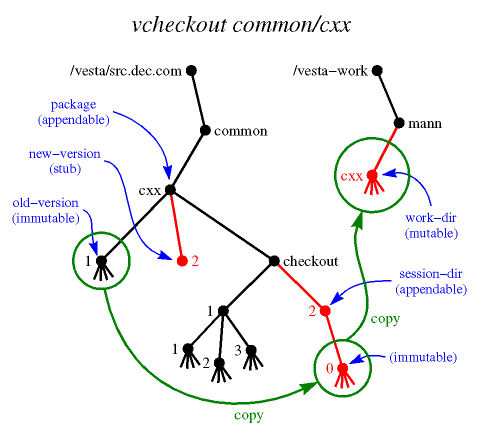

vcheckout - Check out a package from the Vesta repository.
vcheckout [-q] [-Q] [-v] [-f] [-F] [-o old-version | -O] [-n new-version | -N] [-s session-dir [-u] | -S] [-w work-dir | -W] [-m message | -M] [-h hints] [-R repos] [package]
In the most common usage, only the package argument is given.
- Description
- Flags
- Message Entry
- Configuration
- Triggers
- Limitations
- Environment Variables
- See Also
- Author
See the vesta-intro man page's Terminology section for definitions of terms, and its Name Interpretation section for an explanation of how names are looked up.
The vcheckout command checks out a package from the Vesta repository. It reserves the next version number, creates a mutable working directory for editing the package, and creates a session directory to hold the immutable working versions that will be created during the checkout session. It creates a new symbolic link latest in the session directory to point to the latest working version.
If omitted, package defaults to the current directory. If the name package is unqualified (does not have "/", ".", or ".." as its first arc), it is interpreted relative to the site's default directory of packages, DefaultPackageParent.

In more detail, vcheckout:
- Prompts the user to enter a message about the intended change of the checkout. (See the "Message Entry" section below.)
- Reserves the name new-version for a new public package version by creating a master stub by that name.
- Creates a checkout session directory named session-dir.
- Binds the name session-dir/0 to the same immutable directory named by old-version.
- Creates a master stub named session-dir/latest.
- Creates a mutable working directory named work-dir, initializing its contents to the contents of old-version.
- Sets the following attributes:
- On new-version
- old-version, session-dir, work-dir, checkout-time, checkout-by, possibly checkout-from and checkout-to, and optionally message.
- On old-version
- next-versions and next-sessions
- On session-dir
- old-version, new-version, work-dir, checkout-time, checkout-by, type (= "session"), possibly checkout-from and checkout-to, and optionally message.
- On session-dir/latest
- symlink-to (= "$LAST").
- On work-dir
- old-version, new-version, session-dir, session-ver-arc, checkout-time, and checkout-by.
Directory names used as attribute values are canonicalized to start with "/", and settings are omitted where they do not apply. The checkout-by attribute is set to the invoking user's global name and the checkout-time attribute to the current date and time.
You must have read access to old-version and write access to the parent directories of the sources that vcheckout is to create. All the newly created sources are owned by you. The session-dir and the new-version stub have their access permissions set to 0777 & ~umask. Thus if your umask is 022, only you will have write access to them, so others will not be able to vadvance(1) in your session or vcheckin(1) your reserved version number. The work-dir inherits its access permission from its parent directory.
In the presence of replication, a checkout cannot always be carried out entirely in the local repository. In particular, the local repository may contain no replica of one of the needed objects, or it may contain a non-master replica where the master replica is needed. (See vrepl(1) and vmaster(1) for more information about replication and mastership.) vcheckout handles such cases automatically, performing any of the following remote actions that prove necessary:
- Fill in defaults for old-version and new-version from the remote master copy of package.
- Obtain a unique name for session-dir from the remote master copy of its parent directory.
- Replicate old-version into the local repository.
- Create the new-version stub in the remote master copy of its parent directory, setting its checkout-from attribute to the name of the remote repository and its checkout-to attribute to the name of the local repository. Then replicate and transfer mastership of the new stub to the local repository.
- Create the session-dir in the remote master copy of its parent directory, setting its checkout-from attribute to the name of the remote repository and its checkout-to attribute to the name of the local repository. Then replicate and transfer mastership of the new directory to the local repository.
vcheckout returns status 0 for success, 1 for parameter syntax errors, or 2 for more serious errors. (Note that if any of the trigger commands fail, vcheckout returns status 2.)
- -q
- Quiet; suppress printing out what is being done.
- -Q
- Query; print out what the command would do, but don't do it.
- -o old-version
- The old package version on which the new one is to be based. If old-version is unqualified, it is interpreted relative to package. Defaults to the highest version number bound in package (to something other than a stub); or if there are no version numbers bound, -O is assumed.
- -O
- If this flag is given, the new version is not based on a previous version. Omits binding session-dir/0, initializes work-dir to empty, and omits setting the old-version attribute. For purposes of defaulting other attributes, old-version is taken to be "0".
- -n new-version
- The new package version that will be created when the package is checked in. A stub is created to reserve this name. If new-version is unqualified, it is interpreted relative to package. Defaults to 1 plus the highest version number bound in package (to something other than a stub); or 1 if there are no version numbers bound.
- -N
- Omits creating a stub to reserve the new name and omits setting the new-version attribute. This option is useful if you want to get a private copy of a package to edit and do not intend to check in your changes. (Also affects the default value for -s; see that option for details.)
- -s session-dir
- The session directory that will hold immutable working versions created during the checkout session.
If session-dir is unqualified and the -F flag is not given, it is interpreted relative to package.
Defaults to new-version with checkout/ inserted before the last arc, unless the -N or -F flag is given. For example, if new-version is /vesta/src.dec.com/test/5, session-dir defaults to /vesta/src.dec.com/test/checkout/5.
If the -N flag is given and old-version does not contain a checkout arc, session-dir defaults to old-version with checkout/ inserted before the last arc and .user_realm.n appended, where n is a small integer chosen to make the name unique. For example, if old-version is /vesta/src.dec.com/test/4, then session-dir might default to /vesta/src.dec.com/test/checkout/4.mann_pa.dec.com.2.
If -N is given and old-version already contains the arc checkout, then session-dir defaults to old-version with the last "/" replaced by a "." and .user_realm.n appended, where n is a small integer chosen to make the name unique. For example, if old-version is /vesta/src.dec.com/test/checkout/5/12, then session-dir might default to /vesta/src.dec.com/test/checkout/5.12.mann_pa.dec.com.1.
If the -F flag is given, these same rules are followed, but the repository root is replaced with the [UserInterface]ForeignParent setting. Any directories on this path which don't exist will be created. So, for example:
- If package is /vesta/example.com/pkg, session-dir is checkout/123.foo, and [UserInterface]ForeignParent is /vesta/example.net/foreign, then the session direcotry to be used would be /vesta/example.net/foreign/example.com/pkg/checkout/123.foo.
- If old-version is /vesta/<foreign-site>/test/4, then session-dir might default to /vesta/<current-site>/foreign/<foreign-site>/test/checkout/4.mann_pa.dec.com.2.
- If old-version is /vesta/<foreign-site>/test/checkout/5/12, then session-dir might default to /vesta/<current-site>/foreign/<foreign-site>/test/checkout/5.12.mann_pa.dec.com.1.
- -u
- Appends .n to a non-default session directory specified with the -s flag, where n is a small integer chosen to make the name unique. Has no effect if the -s flag was not used.
- -S
- Omits creating the session directory and placing a base version in it, and omits setting the session-dir attribute. If you do this, it will be pointless to edit files in the working directory, because there will be no way to advance or check in your changes.
- -F
- Foreign non-exclusive checkout. Useful mostly in cases when the master repository of the package/branch being checked out is inaccessible or won't grant a permission for the operation. As with the -N flag, it omits reserving a new version and omits setting the new-version attribute, so user can get a private copy of a package to edit. Session directories of all foreign non-exclusive checkouts are placed under [UserInterface]ForeignParent directory according to the rules described uder the -s flag above.
- -w work-dir
- The mutable working directory. If work-dir is unqualified, it is interpreted relative to DefaultWorkParent/user, where user is your local user name. Defaults to the last arc of the name package that does not begin with a decimal digit. If the directory already exists, "." and a small integer will be appended to make the name unique. (Note that this means you may not get exactly the directory name you specify with this flag.)
- -W
- Omits creating the mutable working directory, and omits setting the work-dir attribute.
- -m message
- Specify the checkout descriptive message. If the message argument is "-", the user will be prompted to enter a message. (See the "Message Entry" section below.) If message is any other text, it will be used as the checkout descriptive message without prompting the user. If neither the -m flag nor the -M flag is used, the default is "-m -" (although this can be changed with the [UserInterface]vcheckout_message configuration setting).
- -M
- Omit the checkout descriptive message.
- -h hints
- If vcheckout fails to find the master copy of a directory it needs to modify (or fails to find any copy of the old version) in either the local repository or any of those repositories listed in [UserInterface]DefaultHints, you can suggest additional repositories for it to look in using this option. The hints argument is a comma- or space-separated list of repositories, specified by host name and TCP port number in the format host:port. The :port portion may be omitted; it defaults to [Repository]VestaSourceSRPC_port.
- -R repos
- Check out into repos instead of the default local repository. The repository is specified by host name and TCP port number in the format host:port. The :port portion may be omitted; it defaults to [Repository]VestaSourceSRPC_port.
- -f
- Force; omit sanity checking. If the -f flag is not given, the parent directory of new-version must be of type "package" (that is, its type attribute must include this value), and the parent directory of session-dir must be of type "checkout".
- -v
- Displays extra information about triggers. Before executing any trigger commands, the environment variables used to provide information to them are printed. Also, each trigger setting is printed before the command is executed. This can be used to help debug trigger problems. When used with the query flag (-Q), the triggers are displayed in their sorted order without actually running them.
vcheckout's default behavior is to prompt the user for a checkout descriptive message. If the EDITOR environment variable is set, the external editor program it specifies is invoked to edit the message. Otherwise, the message is read from standard input. A prompt is printed if the standard input is a terminal:
Enter checkout description, terminated with ^D or . on a line by itself :If the standard input is not a terminal (e.g. it was redirected to a file or a pipe), no prompt will be printed, but the standard input will still be used as the checkout descriptive message. (Note that when EDITOR is set, the external editor is invoked even if the standard input is not a terminal.)When using an external editor, the initial text will be "<enter checkout description here>". If the initial text is left unedited or the user enters an empty message, they will be asked for confirmation before completing the operation:
Empty checkout description. Continue (y/n)?This is the only chance to abort when EDITOR is set. (So if you change your mind and are using an external editor, exit the editor either with the message unedited or with an empty message.)The -m flag can be used to specify the checkout descriptive message on the command line. The -M flag can be used to omit the checkout descriptive message. In either of these cases, no external editor will be invoked, and the standard input will not be read.
The default of prompting for a checkout descriptive message can be disabled with the [UserInterface]vcheckout_message configuration setting. However, this can be overridden on the command line with "-m -", which will always cause vcheckout to prompt for a checkout descriptive message.
The following values are obtained from the [UserInterface] section of the Vesta configuration file (vesta.cfg).
- AppendableRootName
- The filename under which the global root directory of Vesta repositories is mounted. Ordinarily set to /vesta.
- MutableRootName
- The filename under which the local tree of mutable directories provided by Vesta is mounted. Ordinarily set to /vesta-work.
- DefaultPackageParent
- The default directory to put new packages in. Ordinarily a subdirectory of the appendable root, named with an Internet domain name belonging to the local site.
- DefaultWorkParent
- The default parent directory for mutable working directory trees belonging to individual users. Ordinarily the same as the mutable root.
- realm
- Global user names are formed by appending @realm to the local name.
- TimeFormat
- A format string for strftime(3) to produce time strings for Vesta attributes. A common setting is "%a %b %e %T %Z %Y".
- DefaultHints
- A comma- or space-separated list of additional repositories to search for the master copy of an object and for a copy of old-version. Each repository is specified by host name and TCP port number in the format host:port. The :port portion may be omitted; it defaults to [Repository]VestaSourceSRPC_port. This setting is optional.
- vcheckout_message
- A boolean configuration setting. Determines whether vcheckout will prompt the user for a message describing the intention of the checkout. If it is equal (without regard to case) to "yes", "on", or "true", or can be parsed as an integer that is non-zero, vcheckout will ask the user to enter a message (as if "-m -" had been given on the command line). If it is equal (without regard to case) to "no", "off", or "false", or can be parsed as an integer that is zero, vcheckout will not prompt for a message (as if the -M flag had been given). If not set, defaults to "true".
- ForeignParent
- The directory under which session directories of all foreign non-exclusive checkouts are placed. (See the description of the -F flag above.) It is usually defined as /vesta/<current-site>/foreign/.
The following values are obtained from the [Repository] section of the Vesta configuration file.
- VestaSourceSRPC_host
- The host name of the default (local) repository.
- VestaSourceSRPC_port
- The default TCP port number for repositories.
Settings in the [vcheckout pre trigger] and [vcheckout post trigger] sections of the configuration file are used as commands to be run before and after the repository is modified. See the next section.
Users can configure commands in the Vesta configuration file (vesta.cfg) to be executed before and after vcheckout modifies the repository. Each setting in the [vcheckout pre trigger] section specifies a command to be run before any action is taken, and each setting in the [vcheckout post trigger] section specifies a command to be run after all actions are complete.
The value of each setting specifies a command to run. The names of the settings define the order in which these commands are run. The setting names are sorted as strings, but comparing embedded sequences of digits as decimal integers. (So, for example "foo_10_bar" will sort after "foo_2_bar".) The suggested naming convention for trigger settings is to start with an integer, follow with a descriptive name, and follow that with any other text. (This is based on the convention used for System V style init script links typically stored in /etc/rcN.d.)
Here's a simple example of how we suggest naming trigger settings, and how they are ordered for execution:
[vcheckout pre trigger] 100world = echo World! 9tada = echo Tada: 50hello = echo Hello,Because these all start with numbers, they will be executed in the order "9tada", "50hello", "100world". The output will look like this:% vcheckout /vesta/example.com/foo Tada: Hello, World! Reserving version /vesta/example.com/foo/3 Creating session /vesta/example.com/foo/checkout/3 Making working directory /vesta-work/jsmith/fooTrigger commands are executed with system(3). On most operating systems this means "/bin/sh -c command", so simple in-line shell scripts can be used. (Note that each is executed in its own shell process, so environment variables set during one trigger command will not propagate to subsequent ones.)If any of the commands in the [vcheckout pre trigger] section exit with error (non-zero) status or are terminated by a signal (e.g. segmentation fault, abort), vcheckout will exit without performing the checkout.
The commands in the [vcheckout post trigger] section will only be executed if the checkout is successfully completed. If vcheckout fails with an error, the commands in the [vcheckout post trigger] section will not be executed.
Note that all the trigger commands (both pre and post) are executed sequentially. Once a trigger command is started, nothing else happens until it completes. If any of the pre trigger commands runs forever, vcheckout will not perform the checkout. If any of the post trigger commands runs forever, vcheckout will not complete. (In other words, a trigger command that hangs will cause vcheckout to hang.) If any of the pre or post trigger commands exit with error status or are terminated by a signal, vcheckout will exit without running any more commands from those sections. (In other words, a trigger command that fails will prevent further trigger commands from being run.)
If the the query flag (-Q) is given, the trigger commands will not actually be run.
Information about what vcheckout is going to do or has just done is provided to the trigger commands through the following environment variables:
- VESTA_TOOL
- The name of the Vesta tool the trigger command has been invoked from. (For vcheckout, this will always be "vcheckout".)
- VESTA_REPOS
- The local repository (host:port) vcheckout communicates with (either the default from the configuration file or the one specified with the -R flag.
- VESTA_MASTER_HINTS
- Additional repositories which may have been consulted in order to find the master copies of the parent directories of new-version and session-dir. This is the combination of the argument to the -h flag (if it was used) and the hints from the [UserInterface]DefaultHints configuration setting (if set in the configuration file).
- VESTA_PACKAGE
- The path to the package to be checked out.
- VESTA_OLD_VERSION
- The path to the version the checkout will be based upon (either automatically determined or specified with the -o flag).
- VESTA_OMIT_OLD_VERSION
- Set to 1 if there is no old version (if either the -O flag was given or if this is the first checkout of a new package with no versions), set to 0 otherwise.
- VESTA_OLD_VERSION_REMOTE
- Set to 1 if the old version was only found in a remote repository and will be replicated to the local repository during the checkout, set to 0 otherwise.
- VESTA_OLD_VERSION_REPOS
- The repository (host:port) where a replica of the old version was found. If this is different from $VESTA_REPOS, $VESTA_OLD_VERSION_REMOTE will be 1. If there is no old version, this will be set to the empty string.
- VESTA_NEW_VERSION
- The path to the new version to be reserved by the checkout (either automatically determined or specified with the -n flag).
- VESTA_OMIT_NEW_VERSION
- Set to 1 if there is no new version (if either the -N flag or the -F flag was given), set to 0 otherwise.
- VESTA_NEW_VERSION_REMOTE
- Set to 1 if the parent directory of the new version (typically $VESTA_PACKAGE) is mastered in a remote repository, set to 0 otherwise. If this is set to 1, the new version will be reserved remotely and then be replicated to and have its mastership transferred to the local repository.
- VESTA_NEW_VERSION_REPOS
- The repository (host:port) which has mastership of the parent directory of the new version. If this is different from $VESTA_REPOS, $VESTA_NEW_VERSION_REMOTE will be 1. If there is no new version, this will be set to the empty string.
- VESTA_SESSION_DIR
- The path to the session directory to be created by the checkout (either automatically determined or specified with the -s flag).
- VESTA_OMIT_SESSION_DIR
- Set to 1 if no session directory will be created (if the -S flag was given), set to 0 otherwise.
- VESTA_SESSION_DIR_REMOTE
- Set to 1 if the parent directory of the session directory (typically "$VESTA_PACKAGE/checkout") is mastered in a remote repository, set to 0 otherwise. If this is set to 1, the session directory will be created remotely and then be replicated to and have its mastership transferred to the local repository.
- VESTA_SESSION_DIR_REPOS
- The repository (host:port) which has mastership of the parent directory of the session directory. If this is different from $VESTA_REPOS, $VESTA_SESSION_DIR_REMOTE will be 1. If there is no session directory, this will be set to the empty string.
- VESTA_WORK_DIR
- The full path to work-dir (either automatically determined or specified with the -w flag).
- VESTA_OMIT_WORK
- Set to 1 if the -W flag was given, set to 0 otherwise.
- VESTA_USE_FOREIGN_TREE
- Set to 1 if the -F flag was given, set to 0 otherwise. (Note that if the session directory would be inside the directory specified in the [UserInterface]ForeignParent without this option, such as checking out a branch created there with "vbranch -F", this may have no effect.)
- VESTA_MESSAGE
- The checkout message, or the empty string if there is no checkout message.
- VESTA_OMIT_MESSAGE
- Set to 1 if there is no checkout message (if the -M flag was given or [UserInterface]vcheckout_message was used to disable checkout messages), set to 0 otherwise.
- VESTA_QUIET
- Set to 1 if the quiet flag (-q) was given, set to 0 otherwise.
- VESTA_FORCE
- Set to 1 if the force flag (-f) was given, set to 0 otherwise.
(Note that the environment variables are the same for both the pre and post trigger commands.)
Here are some examples using these environment variables:
[vcheckout pre trigger] // If the user tries to check out a package with a non-empty // "obsolete" attribut, print an error and exit 50no_obsolete = if vattrib -q -G obsolete $VESTA_PACKAGE > /dev/null; then echo "Error: $VESTA_PACKAGE is marked obsolete"; exit 1; fi [vcheckout post trigger] // Replicate all new version reservations to known peer repositories // so that they're visible with vwhohas 50repl_reservations = [ $VESTA_OMIT_NEW_VERSION -eq 1 ] || for r in $VESTA_MASTER_HINTS; do vrepl -s $VESTA_REPOS -d $r -e+ $VESTA_NEW_VERSION; doneIf the verbose trigger flag (-v) is given, these environment variables will be printed, and each trigger command will be printed before executing it. This can be useful for debugging trigger problems. If both verbose trigger flag and the the query flag (-Q) are given, the triggers are displayed in their sorted order without actually running them. This can be used to find out what trigger commands are configured without actually running them.
vcheckout is atomic if the checkout modifies only the local repository. If one or more remote repositories must be modified, however, the action performed at each repository is individually atomic, but vcheckout can die between the actions on different repositories. To make this problem less likely to occur, vcheckout ignores SIGINT (the ^C interrupt) during the critical section.
You can clean up after such an incomplete checkout by using vcheckin to check in a new version that is identical to the previous version. For example, if /vesta/foo.com/pkg was incompletely checked out, leaving a master stub for version 33, the command would be:
vcheckin -c /vesta/foo.com/pkg/32 -n /vesta/foo.com/pkg/33 -S -WThis command must be directed to the repository that holds the master copy of the reservation stub (33 in the example). In the case of a remote checkout, this might be either the source or destination repository, depending on how far the checkout got before it died. If you need to clean up an incomplete checkout but the above command fails because you are local to the wrong repository, add the -R repos flag to the command line, where repos is the remote repository that holds the master stub. In this example, you could find the stub's master repository with the command:vattrib -g master-repository /vesta/foo.com/pkg/33When using the -F flag, if the foreign hierarchy does not yet contain the necessary directories for a foreign session for the package being checked out, they will be created before running the commands from the [vcheckout pre trigger] section of the config file. (For example, if the command line is "vcheckout -F /vesta/a.example.com/foo" and [UserInterface]ForeignParent is set to /vesta/b.example.com, the directory /vesta/b.example.com/a.example.com/foo/checkout will be created if it does not already exist.) This violates the rule of not altering the repository before the [vcheckout pre trigger] commands are run, but is necessary to determine which repository has mastership of the foreign session directory parent (to set the $VESTA_SESSION_DIR_REPOS trigger variable), as well as other information passed to the trigger commands.
- VESTACONFIG
- If set, specifies the Vesta configuration file to be used. See vesta.cfg(5).
- EDITOR
- If set, specifies the editor to use for editing the checkout descriptive message.
This page was generated automatically by mtex software.